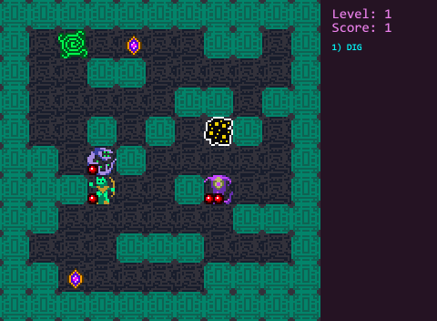
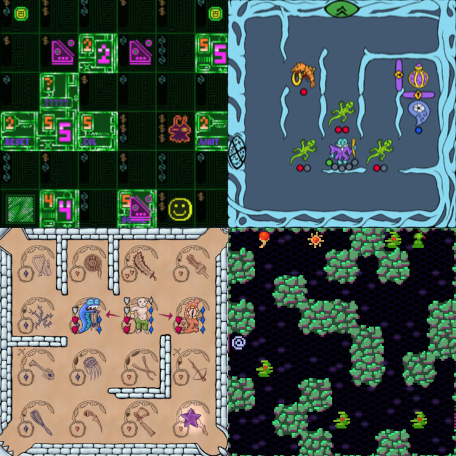

JavaScript Broughlike Tutorial
This is a tutorial about writing a broughlike (a small, roguelike similar to
868-HACK or
Cinco Paus) from scratch in JavaScript.

Why this tutorial? Why broughlikes? Why JavaScript?
The rest of this page provides answers and gives a very brief introduction to some JavaScript features we'll be using.
If you want to make more traditional roguelikes with JavaScript and rot.js, start
here. If you're looking for a good Unity starter for making broughlikes,
try this.
What's different about this tutorial?
- You already have all the software you need: a web browser, a text editor, and an image editor.
- The result will be easily shareable and require no downloads to play
- We'll make all the assets from scratch: code, images, and sound
- No dependencies. No frameworks. No libraries.
- We're aiming for a game that is at least somewhat compelling
In many tutorials, you have to download a bunch of software, fight with versioning problems, write code where a library does all the heavy lifting so you're left with no understanding of how it does it, and glue together premade assets you never figure out how to make yourself. The end result is often a clone or shallow toy that no one would actually want to play anyway.
Features the finished game will have:
- a small map with easily modifiable grid size
- multiple levels
- monsters
- spells
- collectible treasure
- high scores, preserved across browser launches
- sounds
- animation and screen shake
We're going to do all that in less than 850 lines of code.
A warning up front: I'm
not going to focus on best practices here. I'm shooting for the shortest and simplest code. Quick and dirty.
What the hell is a broughlike and why do I care?
Michael Brough is a game designer most well known for a series of cleverly crafted roguelike games, known as "broughlikes", with the following features:
- Tiny grids
- Parity mechanics
- Low randomness
- Highly replability despite simple rules

The beauty of broughlikes lie in their simplicity. 868-HACK is played on a 6x6 grid and features only 4 types of monsters. So it may appear that this kind of game is easy to produce. Yes and no. Their simplicity belies the excruciating attention to detail and design work that goes into each one. Go read
Brough's blog if you don't believe me.
So these games are very easy to program, but hard to design. A perfect fit if you suspect you might be a talented designer, but a novice programmer. Also great for game jams; 868-HACK started out in the Seven Day Roguelike Challenge of 2013!
A basic level of programming knowledge will be helpful, but we'll cover a bit of JavaScript before starting (feel free to skip to the next section if you're already comfortable with JavaScript.)
Why JavaScript?
I was inspired to create this tutorial after struggling with and failing to complete the Unity
2D roguelike tutorial. This was embarrassing because I've been programming for over a decade and have made a bunch of roguelikes and even sold one, but that Unity tutorial was simply too much. The steps required constant cross referencing with a Unity 4 to 5 upgrade guide, they contained random gotchas that broke everything, and there was a bunch of completely unnecessary junk thrown on like box colliders and rigid body physics.
Now, I'm not here to tell you that Unity is bad. But if you're trying to learn how to make games, I think JavaScript is a
great starting point.
- It's accessible. You have all the tools already. You can start tinkering with JS in this very tab. You have a fully featured debugger too.
- No compile times. Refresh and see changes immediately.
- JavaScript objects and arrays are light years ahead of collection types in other languages as far as brevity, ease of use, and utility.
- JavaScript lets you get away with so much (weak types, undefined properties, type coercion). You can lament the lack of safety or embrace it and become super productive.
Some JavaScript basics
While on this page, open the Console in your browser dev tools and follow along. Open the tools with either: Ctrl+Shift+I
or right click and "Inspect"
or from your browser menu). Type commands into the Console, press enter, and see what you get.
VARIABLES
Variables are used to store data and use it later. This is how we declare variables and assign them an initial value in one shot.
Type any previously defined variable like
into the console to see its value.
Same as let, but the variable is constant and cannot be modified.
Declares a global variable (assuming
is not already declared).
TYPES
You don't have to specify a variable's type, though each will still have a type under the hood.
The important thing to know is what types you have available: strings
(
),
numbers
(
),
booleans (
or
). There's also objects, arrays, and functions, all of which we'll cover in a moment.
If you use two differing types together in one operation or comparison, JavaScript will do "type coercion": try to do the most sensible thing by changing one of the types so the operation goes through. For example:
Results in the string "99problems".
COMMENTS
OPERATORS
Common arithmetical operators are available:
Results in 1.6666666666666667
Results in 2. This is the "modulus" operator; it basically does remainders.
We'll also use comparison operators like:
Is true.
Is false.
For anything else, there's the built-in
object:
etc.
CONDITIONALS
The
statement evaluates some expression and runs the inner block if the expression was true. Otherwise the
block is executed.
If you were to run this several times, you would see that the first block is entered only 25% of the time.
We'll also use two other conditionals: an inline version of
with no braces and the ternary operator
.
This does the exact same thing as the above code:
FUNCTIONS
Functions are little blocks of code that we can pass data to and from. They help us reuse, document, and organize our code.
The really important thing to know about functions in JavaScript is that they're
first class citizens. You can assign functions to variables and pass or return functions to other functions. That gives us a ton of flexibility.
You should also be aware there are a few other ways to represent functions such as "fat arrow" syntax, which does pretty much the same thing:
LOOPS
The
loop evaluates some expression and repeatedly runs the inner block as long as it's true. You can end the loop early with a
statement.
The
loop repeatedly runs the inner block. How many times? That's determined by the expressions in parentheses. Here we're starting at 1, going up by 1 each time, and iterating as long as we're less or equal to 10. The variable
we declare will be useful for accessing array elements...
ARRAYS
When you need multiple instances of the same thing (think bullets, tiles, monsters, etc.), arrays are what you need.
Making a new array is dirt simple. You can even prepopulate them.
You access array elements by passing their index (starting from 0) in brackets.
gives you 200.
Here we're creating an array, adding an element with push, iterating over the array, and uppercasing each element.
JavaScript includes a bunch of really nice helper methods on arrays such as filter, includes, and forEach that we'll be using throughout the tutorial.
OBJECTS
Objects also store elements, but with string indexes (keys), instead of numerical ones.
The syntax uses a different kind of bracket and requires keys to come before elements, but is otherwise similar to arrays. You can access properties of an object through either dot or bracket notation.
CLASSES
You don't have to use classes if you don't want to. But I think they're decent for representing certain things in our game.
If this is a little overwhelming, don't worry! Important takeaways are below
- You can make a specialized version of another class with "extends". Later we'll make a Monster class and extend it to make our specific monster type
- You make a new instance of a class with the "new" operator, which calls the constructor method.
- The "this" keyword is a reference to the current instance.
OK, let's get started then. In the next section, we'll figure out how to draw to the screen in just 6 lines of code.